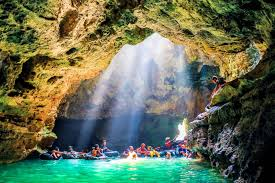
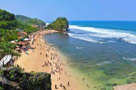
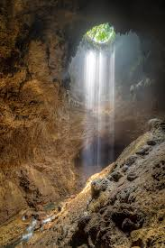

Tentang Gunung Kidul
Nama “Gunungkidul” berasal dari Bahasa Jawa, yang berarti “gunung di selatan.” Ini mengacu pada lokasinya yang terletak di bagian selatan Pegunungan Sewu.Gunungkidul terletak di pesisir selatan Pulau Jawa, berbatasan dengan Provinsi Jawa Tengah di sebelah utara dan timur, Samudra Hindia di sebelah selatan, serta Kabupaten Bantul dan Kabupaten Sleman di sebelah barat.
Destinasi Wisata
- Gunung Ireng Patuk
- Gua Pindul
- Pantai Indrayanti
- Goa Jomblang
Galeri


